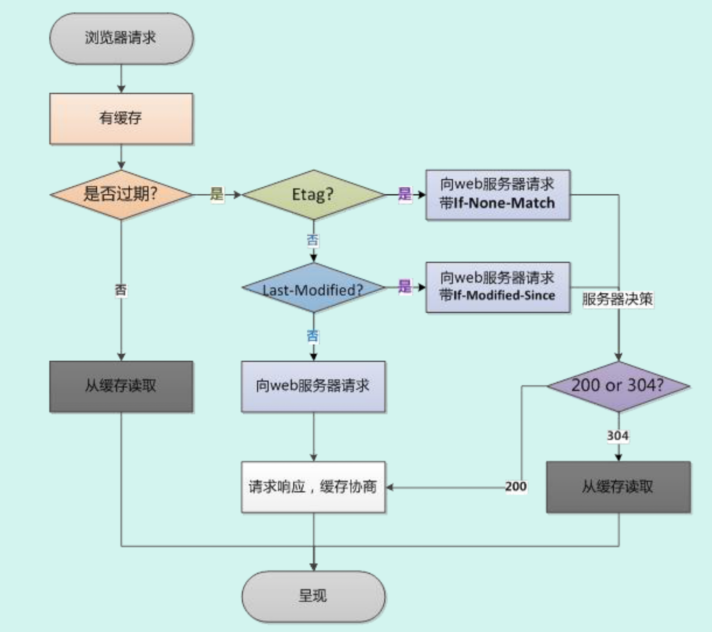

浏览器缓存是前端一个重要的知识点，为了搞清楚强缓存、协商缓存，我决定写一篇博客来提取我零碎的理解并整理。
# 浏览器缓存的概念？
简单来说，就是浏览器将通过 HTTP 请求获取到的资源存储在本地的一种行为。
# 为什么要使用浏览器缓存
有些资源可能下载一次之后很长都不会变动，为了提高访问速度，将其缓存在本地。
可以降低服务器的负担。
# 浏览器缓存位置
内存缓存（memory cache）
硬盘缓存 (disk cache)
service worker
浏览器的资源缓存分为硬盘缓存和内存缓存两类，当首次访问网页时，资源文件被缓存在内存中，同时也在本地磁盘中保留一份副本，当用户刷新页面时，如果缓存的资源没有过期，那么直接从内存中读取数据并加载。当用户关闭页面后，当前页面缓存在内存中的资源会被清空。当用户再一次访问页面时，如果缓存没有过期，就从磁盘加载
# 浏览器缓存的分类
# 强缓存
浏览器加载资源时，会先根据本地缓存资源的字段来判断是否命中资源。如果命中就直接使用缓存中的资源，不会再向服务器发起请求。
# 强缓存相关字段
# Expires
该字段表示一个绝对时间的 GMT 格式字符串，代表着这个资源的失效时间。在此时间之前，则缓存未失效。
但是因为该字段是一个绝对时间，如果客户端和服务器时间差异较大时，可能会导致缓存混乱。
# Cache-Control
主要是利用该字段的 max-age 进行判断，该字段的 max-age 是一个相对时间，例如 Cache-Control：max-age=3600 表示该资源的有效时间为 3600 秒。
除了 max-age 之外，还有几个字段需要留意
- no-cache：需要进行协商缓存，发送请求到服务器表示确认是否使用缓存
- no-store：禁止使用缓存，每一次都要重新请求
- public：可以被所有用户缓存，包括终端用户和 CDN 等中间代理服务器
- private：只能被终端用户缓存。
Cache-Control 和 Expires 可以同时启用，但 Cache-Control 优先级更高
# 协商缓存
当强缓存没有命中的时候，浏览器会发送一个请求到服务器，通过一些字段判断是否命中缓存。如果命中，则返回 304 状态码（未修改）告诉浏览器资源未更新，可使用本地缓存。
# 协商缓存相关字段
# Last-Modify/If-Modify-Since
浏览器第一次请求一个资源的时候，服务器返回的头部中会带有 Last-Modified，这个字段标识着这个资源的最后修改时间。
当浏览器再次请求资源时，会在请求的头部携带一个 If-Modified-Since，它的值是之前服务器返回的 Last- Modified，服务器会根据这个和资源的最后修改时间来判断是否命中缓存。
如果命中缓存，则返回 304，Last- Modified 也不会发生改变。
但是有时候资源修改了，但它的内容可能实际上并未变化，这个时候仍然会认为它修改了，不够完善，所以引出了 ETag
# ETag/If-None-Match
这是一个校验码，根据文件内容生成的一个哈希值。ETag 可以保证资源的唯一性，资源变化会导致 ETag 变化。
服务器根据浏览器上送的 ETag 来判断是否命中。
但是与 Last- Modified 不一样的是，就算服务器返回 304，都会再返回一次 ETag，不管有没有变化。
Last-Modified 和 ETag 可以同时使用，不过服务器会优先验证 ETag，Etag 一致的情况下，才会继续比对 Last-Modified。
# 启发式缓存
当一份资源响应返回时没有 Cache-Control，也没有 Expires，但其实它可以被缓存。
可缓存的时间是：Date 响应头的时间减去 Last-Modified 的时间之后再除以 10（只是规范推荐，实际上每个浏览器不一样）
如果没有强缓存的两个字段的话，浏览器就会用这个来做缓存方式。
如果要禁用启发式缓存，需要 Cache-Control：no-cache
# 浏览器缓存的工作流程

当浏览器访问一个已经访问过的资源的时候，他会这样子：
- 查看是否命中强缓存，即看本地缓存的头部字段判断是否过期，未过期则直接使用强缓存。
- 没有命中强缓存，则发请求到服务器进行协商缓存，检查缓存是否还可用。发送的请求包括了 If-None-Match、If- Modified-Since（也就是 ETag、Last- Modified）给服务器，让服务器比对资源的 Etag、Last- Modified 检查，比对，都一致，就返回 304，告诉浏览器继续使用本地的缓存。否则就不命中协商缓存。
- 如果不命中协商缓存，服务器就返回一份新的资源，并且返回 200
# 缓存和浏览器操作
- 当用户使用 ctrl+F5 强制刷新页面时，浏览器直接从服务器加载网页信息，跳过强缓存和协商缓存。
- 当用户仅仅使用 F5 快捷键刷新页面时，浏览器的加载过程会跳过强缓存，但是仍然进行协商缓存。
| 浏览器相关操作 | Expires/Cache-Control | Last-Modified/Etag |
|---|---|---|
| 在地址栏中按回车键 | 有效 | 有效 |
| 页面跳转 | 有效 | 有效 |
| 新开窗口 | 有效 | 有效 |
| 浏览器前进 / 退后 | 有效 | 有效 |
| 浏览器刷新 | 无效 | 有效 |
| 强制刷新 | 无效 | 无效 |
# 缓存相关面试题
# 如何禁止浏览器缓存静态资源？
可以在代码层面设置相关请求头：
Cache-Control: no-cache, no-store, must-revalidate |
或者给请求的资源增加一个版本号
<link rel="stylesheet" type="text/css" href="./asset.css?version=1.8.9"/> |
# 设置以下请求 / 响应头的效果？
cache-control: max-age=0 |
上述响应头属于强缓存，将 max-age 设置为 0 会使得浏览器必须发送请求重新验证资源，即协商缓存。
cache-control: no-cache |
也是协商缓存
# 除了上述方式，还有哪些方式可以使浏览器使用协商缓存机制？
cache-control: must-revalidate |
# 设置以下请求 / 响应头的效果？
Cache-control: max-age=60, must-revalidate |
如果资源在 60s 之内再次访问，则强缓存机制直接返回，否则必须发送请求到服务器端
大型服务器时可能会使用负载均衡的方式来调度 http 请求，同一个客户端对同一个页面的多次请求可能会被分配到不同的服务器来响应，etag 可能会不同，从而使得缓存失效。